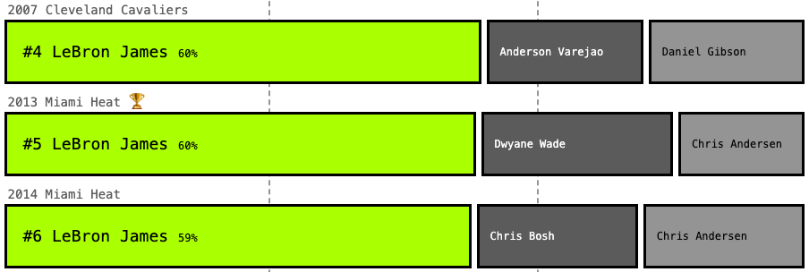
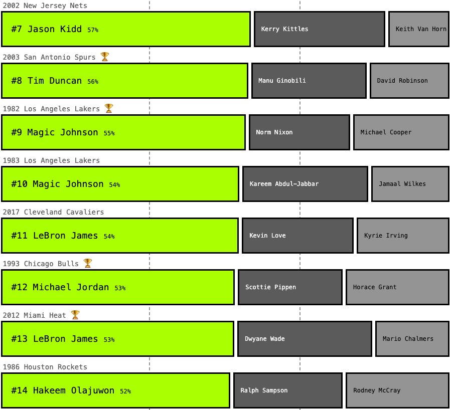

By Russell Goldenerg August 2021
LeBron haters should stop reading now.
Despite being a team sport, some NBA teams rely on a star to get them to the finals more than others. Did Giannis do it without help? Not really. Did MJ carry Pippen? Sometimes. Is LeBron amazing? Yes.
There are plenty of opinionated articles and videos debating this already. So I figured I would add my data-driven take to the mix. What do the data say about ranking the biggest Finals carry jobs in NBA history?
The data say that LeBron’s (losing) effort with the 2018 Cavaliers reigns supreme.
Artistic interpretation of LeBron James carrying Kyle Korver. Other teammates not pictured, but also carried.
Advanced stat haters should stop reading.
To answer this I used the all-in-one advanced stat RAPTOR WAR (WAR) created by 538, a good measure for how many wins a player contributed vs. what a replacement level player would. But we can’t just measure who had the highest WAR in isolation since both games and minutes played factor in. It needs to be relative to the rest of the team.
This chart shows a player's WAR in the playoffs vs. their minutes played for every team in the NBA finals since 1997. Players with more uniform impact are clustered closer together, and those with standout performances are higher and more separated.
The 2005 Pistons represents the "no 'I' in team" philosophy.
The 1998 Bulls and the 2020 Lakers are prime examples of a dynamic duo.
And finally we have Duncan leading the 2003 Spurs, Wade with 2006 Heat, and LeBron basically every year, but notably with the 2018 Cavs representing the single-handed carry jobs.
To rank the biggest carry jobs, I decided to look at the WAR share among the top three players on a team. I could’ve picked any number of players to compare, but most great teams have at least two or three stars, with the rest filling in as role players, so three is the magic number.
Wade tops the list for finals winners, carrying the load with an aging Shaq
  LeBron was just so good in Miami that even with other stars his numbers were crazy Dirk’s final run is often cited as a carry job, but the data prefer his first appearance The biggest surprise here as Hakeem’s first title usually sits atop most lists Less minutes for Giannis and some stellar support put this in the bottom
LeBron was just so good in Miami that even with other stars his numbers were crazy
Dirk’s final run is often cited as a carry job, but the data prefer his first appearance
The biggest surprise here as Hakeem’s first title usually sits atop most lists
Less minutes for Giannis and some stellar support put this in the bottom
To summarize: the data say that LeBron is Mr. Playoffs, and some of the most epic carry jobs were done by finals losers, who maybe just needed one more piece to the puzzle to win it all. But mostly, this is another perspective to add to these on-going debates.
Data for this story came from 538. The analysis only included players with 150+ minutes played. There are a lot of metrics out there, and they can all be great and terrible. Quantity matters in the playoffs, so a cumulative stat was chosen.